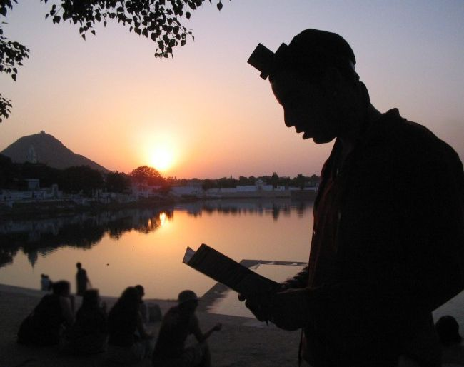

: האברך הליטאי היה המום: “לא גדלתי בערוגה בה גדלתם ולא קיבלתי את החינוך שקבלתם, אך זה עתה ראיתי ממש אלוקות”.
: האברך הליטאי היה המום: “לא גדלתי בערוגה בה גדלתם ולא קיבלתי את החינוך שקבלתם, אך זה עתה ראיתי ממש אלוקות”.
: האברך הליטאי היה המום: “לא גדלתי בערוגה בה גדלתם ולא קיבלתי את החינוך שקבלתם, אך זה עתה ראיתי ממש אלוקות”.

עשרות אלפים נחשפים מדי יום לפעילות המבורכת של SMS–תפילין. הללו מקבלים מדי יום מסרון עם תזכורת על הנחת תפילין או ביום שישי תזכורת להדלקת נרות שבת.
זהו מיזם של איש אחד, הת’ ישראל אסולין מכפר חב”ד. הפרויקט שהחל מכמה עשרות מסרונים יומיים, מגיע בחלוף עשור למאות אלפים מדי שבוע. מדי יום נוספים עוד ועוד יהודים מכול קצות הקשת למאגר מקבלי התזכורת.
בהתוועדות שהתקיימה בשביעי של פסח בבית כנסת ‘המרכזי’ בכפר חב”ד, שיתף הת’ ישראל אסולין את הקהל במעשה נפלא שאירע עמו כמה שנים קודם לכן.
האברך המקנטר
מדי תקופה אנחנו יוזמים מבצע שמטרתו להגדיל את מאגר היהודים המקבלים על עצמם הנחת תפילין. כך אנו שולחים אליהם מדי יום מסרון תזכורת. לאחרונה חתמנו סבב נוסף במבצע זה, בו נטלו חלק שלוחים ותמימים רבים, בסיוע התמימים הלומדים בישיבה באילת. בסוף הסבב הזה נוספו למאגר עוד כשלושים אלף יהודים, מספר שהצליח להפתיע גם אותי. כאקורד מוצלח לסיום המבצע, קיימנו התוועדות חסידית באחד מחדרי הישיבה באילת יחד עם התמימים.
במהלך ההתוועדות נכנס לחדר אברך שחזותו העידה כי הוא התחנך בחוגים הליטאים. הלה ביקש לשמוע על מה השמחה שלנו ביום כה רגיל. לאחר שהתבקש לשתות כוסית ‘לחיים’, סיפרנו לו על המיזם בכלל, ועל אלפי היהודים שנוספו אליו בימים האחרונים. בנוסף תיארנו בפניו את אלפי היהודים שמקבלים את הפתגם של ‘היום יום’. אנחנו נלהבים אך הוא נותר בקרירותו. ניכר היה שאינו מתרשם מדברינו. “חבל על הכסף שהולך לריק ועל ביטול לימוד תורה”, הפטיר בסוף.
הוא ניצל את שתיקת ההפתעה שלנו, והמשיך: “לא נעים לי לכבות את ניצוץ ההתלהבות שבעיניכם ואת האמונה במה שאתם עושים, אך מי אמר לכם שאותם יהודים שמקבלים את המסרון על הנחת תפילין בכלל יניחו תפילין? ומי אמר לכם שאישה יהודייה שמקבלת תזכורת על זמני הדלקת נרות שבת, באמת תדליק נרות? סביר יותר להניח שמרביתם כלל לא יתייחסו להודעות שלכם”, פסק בנחרצות. לפי התיאוריה שהגה בהמשך, אותם אלה שכן פגשו חב”דניק ברחוב והניחו תפילין, ‘נדלקו’ לכמה דקות ותכף חזרו לשגרת יומם החופשית.
ניסיתי לשתף אותו בדוגמאות שאנו מקבלים בכל יום, על יהודים שמקפידים על שמירת אותן מצוות בזכותנו, אך הלה עיקם פרצוף כלא מאמין, והבהיר שאלו רק מקצת קושיותיו.
החלטתי להכות בברזל בעודו הוא חם.
“מה הקושיה הכי גדולה שלך?” שאלתי, “הנה יש לך הזדמנות לשאול אותה כעת”.
אותו אברך העלה את השאלה הכי נדושה בתחום: “איך אתם בכלל מניחים תפילין ליהודי שמרבית הסיכויים שלא נטל את ידיו קודם קיום המצווה?” על השאלה הזו כבר יש לי תקליט קבוע של מענה המבוסס על אחת משיחות הרבי בנושא, שיחה שהרבי דיבר זמן קצר לאחר השקת מבצע תפילין. ראשית ניתן להסתמך בדיעבד ששטף את ידיו במהלך היום, ושנית מצווה גוררת מצווה, ומי יודע, ייתכן והנחת תפילין זו תגרום לו לעלות על דרך הישר.
אותו אברך האזין בקשב רב, אך ניכר היה שאיננו משתכנע. “הסבר לוגי יפה”, סבר ואמר, “אך המציאות בשטח שונה בתכלית”.
תשובה חיה לשאלות
בשלב זה כבר חשבתי שחבל יהיה להמשיך לנהל את השיחה, וכל מה שאטען יתנפץ על קרח הקרירות בכל הקשור להפצת המעיינות, אלא שאז התרחשה תפנית בעלילה, משהו שקוראים עליו רק בסיפורים. במהלך חיי חוויתי כמה השגחות פרטיות, אך השגחה כל–כך מדהימה - טרם חוויתי.
במסדרון מול החדר הפתוח שבו ישבנו, עבר יהודי בשנות האמצע לחייו שזקנו מאפיר במקצת. כשהבחין בי, עצר את הליכתו פתאומית ושאל לשלומי. מבטאו הכבד הסגיר שהאיש נולד וגדל באחת ממדינות ברית המועצות לשעבר. לא הכרתיו קודם, ושאלתי לשמו ומקום מגוריו. כיוון שראה שאיני מזהה אותו, פתח במונולוג מרתק שהותיר את כל יושבי החדר פעורי פה.
“ישראל”, אמר לי, “אתה אולי לא מכיר אותי עם זקן ובגדי חסיד, אך דע לך שבזכותך אני נראה כך”.
האיש התיישב על כסא סמוך, והחל לספר: “שמי הוא פסח. לפני מספר שנים הגעתי מחדרה לאילת בעקבות משבר שעברתי בחיי האישיים. ביקשתי לברוח מהכל, ומשום כך הגעתי לאילת.
“קודם שהגעתי לאילת, התחלתי להתעניין מעט בדרך התורה והחסידות אצל הרב שלום רויטנבורג, משלוחי הרבי בחדרה. למרות זאת, לא עשיתי דבר בכיוון של שמירת מצוות. לאור המשבר שחוויתי, נטשתי הכול, עברתי לאילת, גידלתי קוקו ארוך והמשכתי לחיות חיים חופשיים.
“יום אחד, שעה שצעדתי במדרחוב האילתי, השמש קופחת על ראשי, לפתע אני רואה אותך צועד מולי. אומר לך את האמת - היית נראה לי כמו ‘גנגסטר’ איטלקי. צעדת במרכז השביל בכזה ביטחון עצמי, כאילו הרחוב על חנויותיו שייך לאביך…
“התבוננתי בך, ואז לפתע, בלי כל הודעה מוקדמת או מילת נימוסין, ניגשת אלי ושאלת ברוסית: ‘יהודי יקר, האם כבר הנחת היום תפילין?’ חייכתי ועניתי בשלילה. ‘לא רק היום לא הנחתי, אלא בכל שנות חיי לא קיימתי את המצווה’.
“והנה, מבלי שאני מבין מה קורה, הודעת לי חגיגית שיהודי מוכרח להניח לפחות פעם אחת בחייו תפילין. בטרם הספקתי להתעשת, הפשלת את שרוול חולצתי וקשרת על זרועי את רצועות התפילין בטרם פציתי פה. ביקשת שאברך ואקרא אחריך ‘שמע ישראל’, וכך עשיתי. לאחר שחלצת ממני את התפילין, בטרם הספקתי לדבר איתך, נעלמת בין האנשים בזריזות; אולי מיהרת או שחששת מתגובתי…
“נותרתי לעמוד שם עוד זמן מה, פעור פה ונדהם מול ביטחונך העצמי המופרז. הרי יכולתי להגיב בצורה חריפה מאוד… שעה ארוכה ישבתי על מדרכה סמוכה וחשבתי על מסכת חיי מאז הייתי ילד ועד לאותה נקודת זמן; על הקשיים וההצלחות, על העלייה ארצה, על משפחתי וילדיי. מחשבות מהות החלו לצוץ במוחי, על מעשיי בעולם ועל משמעות היותי בן לעם היהודי. הדמעות לא פסקו לזלוג מעיני עוד שעה ארוכה.
“כשצעדתי מהמדרחוב האילתי חזרה הביתה, ידעתי שחיי עומדים להשתנות - ואכן זה קרה יותר מהר ממה ששיערתי.
“בבוקר יום המחרת, יום שישי בשבוע, טלפן אלי חבר טוב מקהילת דוברי השפה הרוסית באילת, ובפיו הצעה נלהבת. ישנו יהודי, חסיד חב”ד נבון, הרב מיכאל פוגל שמו. הלה מקיים מדי שבת תפילות וסעודות שבת בשיתוף עם דוברי רוסית. ‘מעניין שם מאוד, כדאי לך מאוד להגיע’, הציע לי. לא סירבתי.
“והנה תראה איך אני נראה היום: מגבעת, חליפה, חב”דניק לכול דבר ועניין. דע לך ישראל היקר, שהכול בזכותך; הכול בזכות אותה הנחת תפילין במדרחוב”.
“אני חייב לך את חיי הרוחניים”
הייתי נבוך ונרגש לשמוע את הסיפור, מספר הת’ ישראל אסולין. ראיתי שגם ר’ פסח עצמו מתמלא בהתרגשות ודמעות נקוו בעיניו. ניכר היה שמאורעות אותם ימים מציפים את לבו. ניגשתי אליו וחיבקתי אותו חיבוק חם וארוך. “אני חייב לך את החיים הרוחניים שלי”, המשיך ואמר לי.
בשלב זה הבטתי על פניו של אותו אברך ליטאי שהיה עד לכל השיחה, ושאלתי אותו: “יש לך עוד שאלות על ‘מבצע תפילין’, או בכלל על חב”ד או על הנהגות הרבי?” הוא עמד נדהם ובמשך דקות ארוכות התקשה לדבר. כזו השגחה פרטית שמיימית, זהו משהו שלא חווים כל יום…
“דע לך”, אמר לי פתאום, “לא גדלתי בערוגה בה גדלתם ולא קיבלתי את החינוך שקבלתם, אך זה עתה ראיתי ממש אלוקות. השקפתי על חב”ד ומבצעי הרבי נצבעו בזה הרגע באור אחר”…